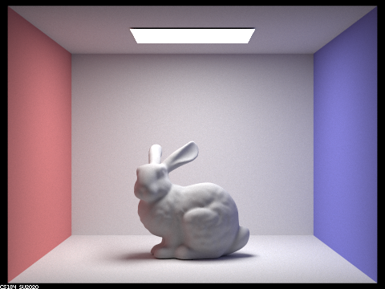
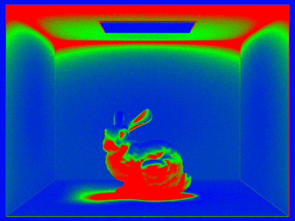

So far, we've seen that Monte Carlo path tracing is very powerful in generating realistic images! However, you may have noticed that it also always results in a large amount of noise.
Of course, noise can be eliminated by increasing the number of samples per pixel. However, it turns out that we usually don't have to do this uniformly for all pixels. Some pixels converge faster with low sampling rates, while other pixels require many more samples to get rid of noise.
Adaptive sampling tries to avoid the problem of using a fixed (high) number of samples per pixel, by concentrating the samples in the more difficult parts of the image.
Algorithm
We provide a very simple algorithm to enable adaptive sampling. It works for each pixel individually based on statistics, detecting whether the pixel has converged as we trace ray samples through it.
Suppose that you've already traced samples through a pixel. We can immediately get their mean and standard deviation . Let's define a variable
to measure the pixel's convergence.
Intuitively, is small only when the samples' variance is small, or the number of samples is large enough. So, the smaller is, the more confidently we can conclude that the pixel has converged. Specifically, we check if
where maxTolerance=0.05 by default. If the condition above is satisfied, we assume that the pixel has converged and stop tracing more rays for this pixel. If not, we continue the tracing-and-detecting loop.
You may wonder why the measure is defined this way and where the magic number comes from. In fact, we're calculating a confidence interval in statistics. Specifically, we are trying to solve for so that, with 95% confidence, the average illuminance in this pixel is between and , based on our samples so far. The number comes from the 95% confidence. To learn more about this, you can check out this article as a nice introduction, and the wikipedia page of z-test for a deeper understanding.
Implementation
For this part, you will work in PathTracer::raytrace_pixel() in src/pathtracer/pathtracer.cpp.
- Tip 1: Radiance are three-channel
Vector3Dstoring R, G, B values. When calculating the statistics, you may useVector3D::illum()to compute its illuminance. - Tip 2: You don't have to keep track of every sample's illuminance to compute and . You only have to keep these two variables:
by adding and for each new sample. Then the mean and variance of all samples so far can be expressed as
- Tip 3: You don't have to check a pixel's convergence for each new sample. This can be costly and, as such, we want to avoid computing it any more frequently than we need to. Instead, we provide a variable
samplesPerBatch=32by default, so that you can check whether a pixel has converged everysamplesPerBatchpixels, until you reachns_aasamples. - Tip 4: Make sure to fill the
sampleCountBufferwith your actual number of samples per pixel, so that you can see the output sampling rate image.
Result
You can enable adaptive sampling from the command line with -a <samplesPerBatch> <maxTolerance>. Note that, once the -a argument is specified, the previous sampling rate assigned by argument -s now represents the maximum number of samples.
For example, when you run
./pathtracer -t 8 -s 2048 -a 64 0.05 -l 1 -m 5 -r 480 360 -f bunny.png ../dae/sky/CBbunny.dae


You should be able to see an image bunny.png, along with an image bunny_rate.png showing the sample rate of every pixel. We use red and blue colors to represent high and low sampling rates. Sampling rates are computed as the ratio between the actual number of samples and the maximum number of samples allowed.
Note that since the adaptive sampling aims at generating noise-free images, it can take very long to converge. For example, this bunny takes more than 2 mins 30 seconds to finish rendering on a Hive machine. (However, judging from the sampling rate image, using a uniform 2048 samples per pixel should take even longer.) Therefore, it is recommended that you test it with a low resolution image or on a small patch of an image to verify its correctness before you start generating final images for your write-up.